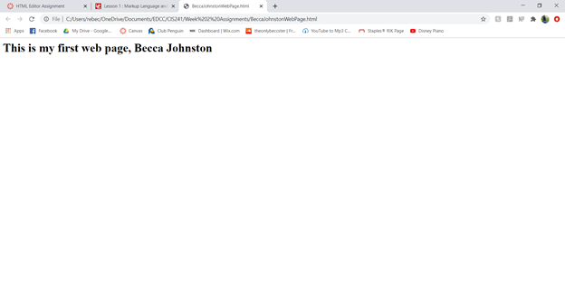

When looking back to where I was at the beginning of the quarter, I can say that this course really proved itself helpful and has been a great first step to learning about Web
Development. On the left, you can see the very first time I coded a website header at the beginning of this quarter. Learning new things is terrifying, but once you get the hang of
it, it’s worth it in the end. I really appreciated that this course had weekly hands-on lab assignments while learning new concepts. I was also able to have the repetition of the
old concepts throughout the course so that I was always practicing a little bit of everything.
Going into this class, I had very little knowledge of HTML and knowing how old the language was made me quickly assume that it wouldn’t be very “up to the times”. I find it mind
blowing how far the language has come and how its combination with other languages can create websites that are simple, but clean and appealing to look at. I dropped by my local
Half Price Books and picked up a book on CSS, and the language combined with HTML truly has endless possibilities. I always thought that GUI editors were how people created websites
and it was more of just having the creative eye; but I forgot the small detail that you need a developer to create the GUI editor in the first place. It’s also important, I think, to
have a creative eye and know what looks good. Anytime you throw the word “design” into a job title, you need to be able to have the eye for what looks good and what doesn’t.
Although tedious at times, the coursework was insanely thorough for an intro class and the online textbook used wasn’t outdated and also had lots of interactive properties. The
book alone impressed me since I’d already taken a couple other classes with older books talking about phones when fingerprint scanners were just being introduced. A career such as
computers is always going to be ever-changing and evolving and that should be accounted for when going to school for it. I would have liked to do more hands-on assignments since I
learned best that way, because sometimes I feel like I can read something 3 times and not understand it; but the moment I’m putting it into action or actually coding it, it makes a
lot more sense. Overall, I’d say that this class has only made me more interested in learning more about web developing.